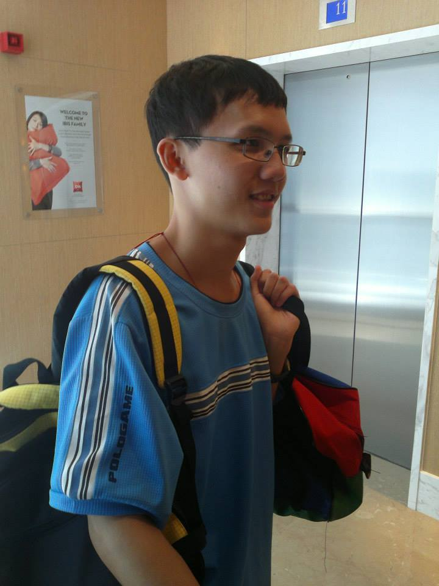

Cheng-Hao Tu [Curriculum Vitae]
Bio
Cheng-Hao Tu was a Ph.D. student at the Department of Computer Science and Engineering, The Ohio State Universit, advised by Dr. Wei-Lun (Harry) Chao. His work mainly focused on transfer learning and adaptation. Before that, he was a research assistant at the MOST Joint Research Center for AI Technology and All Vista Healthcare (AINTU), National Taiwan University, advised by Dr. Chu-Song Chen. He worked on continual learning and image retrieval.
Cheng-Hao Tu received M.Sc. and B.Sc. degrees at the Department of Computer Science & Information Engineering, National Taiwan University. He was advised by Dr. Jane Yung-Jen Hsu at the Intelligent Agents Lab (iAgents). He worked on facial action unit detection.